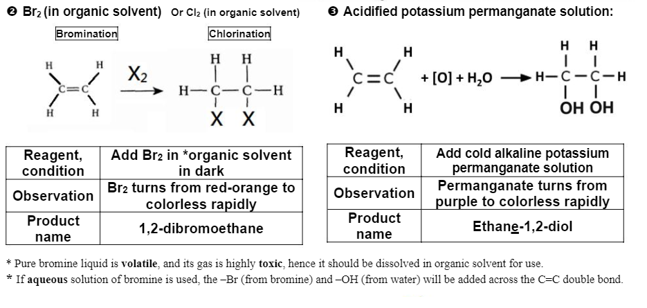

Chemical test: alkenes
Notes
Bromine or potassium permaganate can be decolorized by organic compounds containing C=C double bond.
Example:
- ✔ Ethene
- ✔ Cyclohexene.
- ✘ Heptane. (No observable change)
The reaction is an addition reaction.
Bromine or potassium permaganate can be decolorized by organic compounds containing C=C double bond.
Example:
The reaction is an addition reaction.